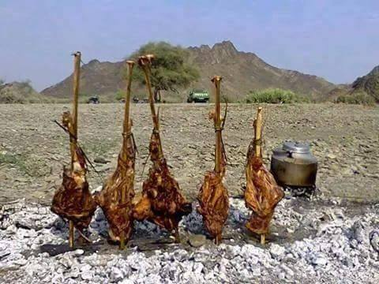
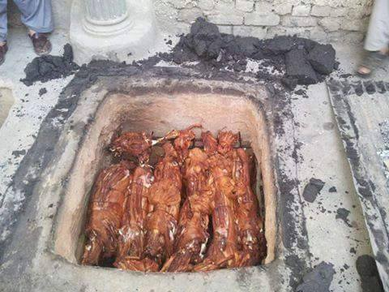
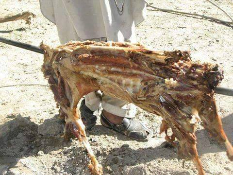
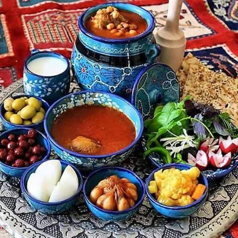
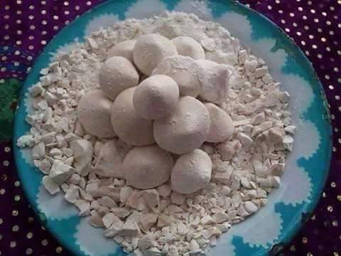
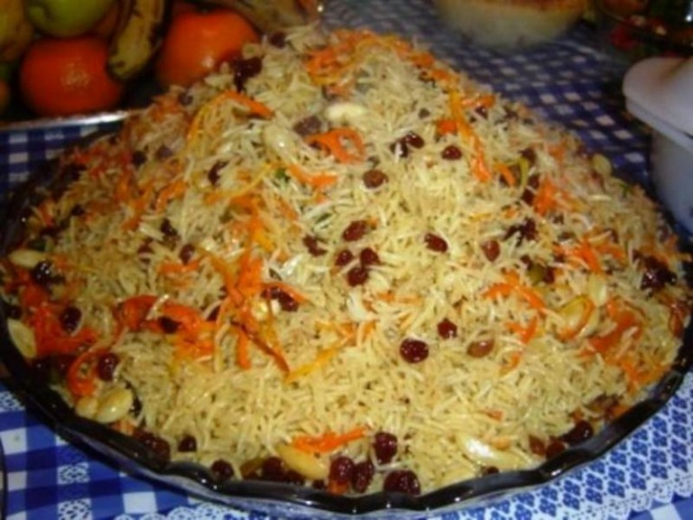
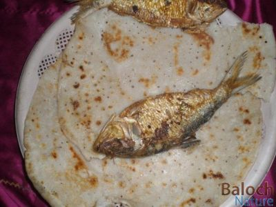
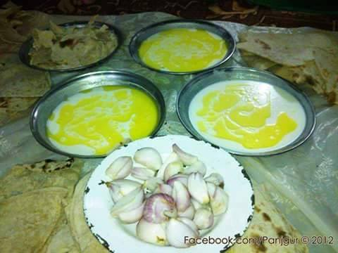

SAJJI
Sajji is the only dish from Baluchistan that is famous around the country and the world . Pieces of lamb are cooked around a fire for hours, till the meat gets crispy. The meat is only seasoned with pepper and salt.
Roosh
Mutton Roosh comes from Pukthun belts of Baluchistan. One of the most famous food items, it is lamb joints served with yakhni, daal, bhindi and lassi.

Khaddi Kabab
Khaddi kabab serves as another version of the very famous Baluchi Sajji. The whole lamb is stuffed inside the ground and covered while it cooks itself out.
Dumpukht
Dumpukht is actually another variety to the Sajji. A whole lamb is cooked around slow flames to give cooked the meat from the insides.
Abgoosht
Abgoosht is a lamb stew, usually made by Iranian or Kurdish descendants in Baluchistan. The stew contains other mashed items like beans, kidney and liver.
Khrud
Khrud is used in a number of dishes in Balochistan, usually with Tereeth. It is actually dry salty yogurt, used to salt up dishes.
Kabuli Pulao
Kabuli Pulao was blessed to people of Baluchistan from Afghan refugees. This delicacy gives a sweet and spicy flavor to the very common pulao.
Fried fish
The Baluchi fish barbecue or better known as fish Sajji comes from the Gwadar, Turbat region of Baluchistan. People prefer eating it with Kaak or Chawal ki roti.
Butt o Maash
Chilaanch
Chilaanch is a two or three colored dessert item, made up of kheer and jelly. The fun bit is that it’s eaten with roti and onions.
